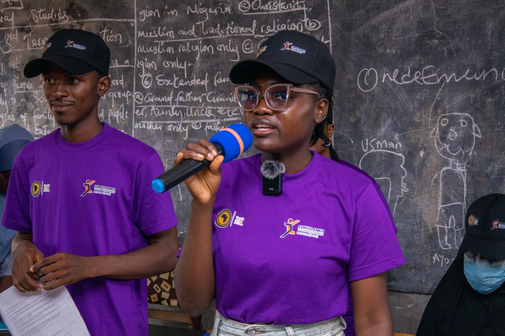
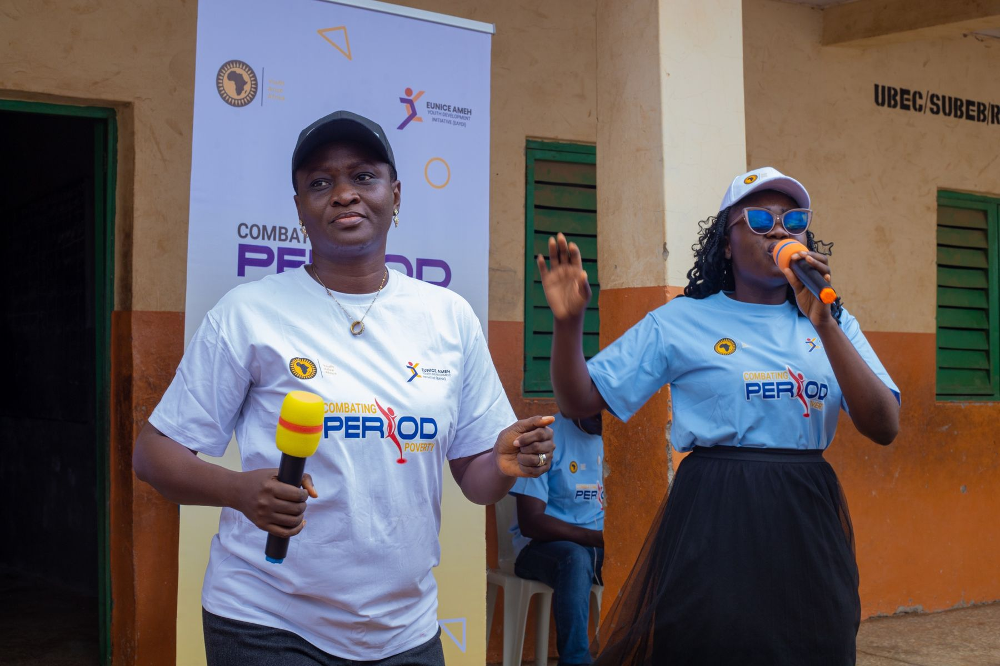
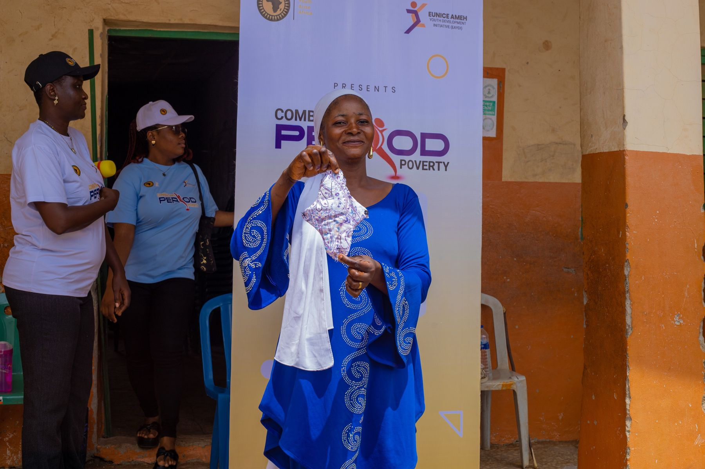
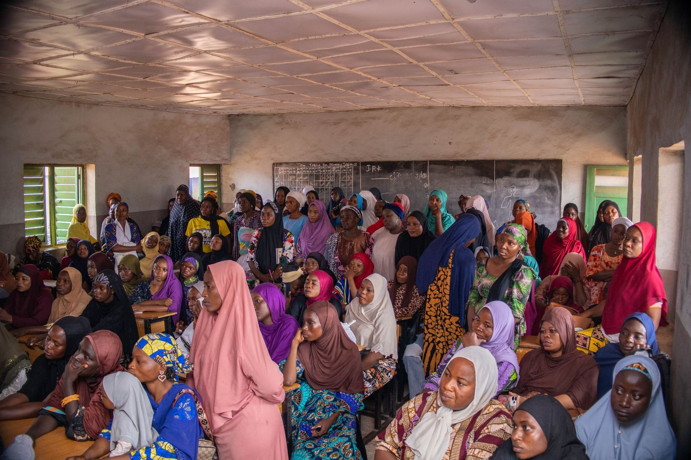

Our programmes
Five pillars. One generation.
Each programme targets a specific barrier between a young person and the life they are capable of. Together, they add up to a pathway.
Education & Learning
Keeping young people in learning, and making that learning count.
We work with schools and community groups to remove the practical obstacles that push young people out of education — and to add the skills formal schooling often misses.
What this looks like
- Academic support, study clubs and exam preparation
- Mentorship pairing students with working professionals
- Digital and foundational literacy training
- Learning materials and school-supply support for vulnerable students
- Career guidance and further-education navigation
Who it serves
In-school and out-of-school young people aged 10–24, with priority to those at risk of dropping out.

Delivering a session inside the school day — where the students already are.

Leadership Development
Leadership is a practice, not a certificate.
We train young people in the skills of leading — then hand them something real to lead. Our volunteers run sessions, manage logistics and represent EAYDI in community meetings from their first cycle.
What this looks like
- Leadership and public-speaking workshops
- Project design, budgeting and facilitation training
- Youth advisory roles in EAYDI programme planning
- Civic education and community advocacy coaching
- Alumni network and continuing peer mentorship
Who it serves
Young people aged 16–30 ready to take responsibility for work beyond themselves.
Health Promotion
Health knowledge is not optional information. It decides who stays in school.
Our health work is frank, age-appropriate and free of shame. It is delivered by facilitators who look like the people they are teaching, in spaces where questions are safe to ask.
What this looks like
- Menstrual health and hygiene education
- Sexual and reproductive health information
- Reusable sanitary kit and dignity kit distribution
- Community sensitisation for parents, caregivers and teachers
- Referral links to local health facilities

Combating Period Poverty
Delivered in partnership with Youth Arise Africa, this campaign combines menstrual health and hygiene education, sanitary kit distribution, food and hygiene support, and community sensitisation — taken directly into schools and underserved communities.

Economic Empowerment
Confidence without income is a half-finished job.
We help young people and women turn skill into livelihood — through vocational training, business fundamentals and the small amount of start-up support that often makes the difference between an idea and a going concern.
What this looks like
- Vocational and trade skills training
- Entrepreneurship and business-planning workshops
- Financial literacy, savings and record-keeping
- Start-up kits and seed support for viable ventures
- Market linkage and cooperative formation for women’s groups
Who it serves
Unemployed and underemployed young people, and women heading households.
Community Engagement
Change that the community did not choose does not survive the handover.
Before a programme runs, we sit with the people who will live with its consequences: parents, school heads, faith and traditional leaders, local government. They shape it, they own it, and they keep it going.
What this looks like
- Community outreaches and open sensitisation events
- Stakeholder dialogue with schools, government and faith leaders
- Advocacy on youth and gender priorities
- Volunteer mobilisation and local capacity building
- Humanitarian and relief support during acute need
Who it serves
Whole communities — because a girl’s access to school is also her father’s decision.

Turnout at a school programme — parents, caregivers and teachers in the room alongside the students.
Bring a programme to your community.
Schools, community groups and local authorities — tell us what you need and we will tell you honestly what we can deliver.